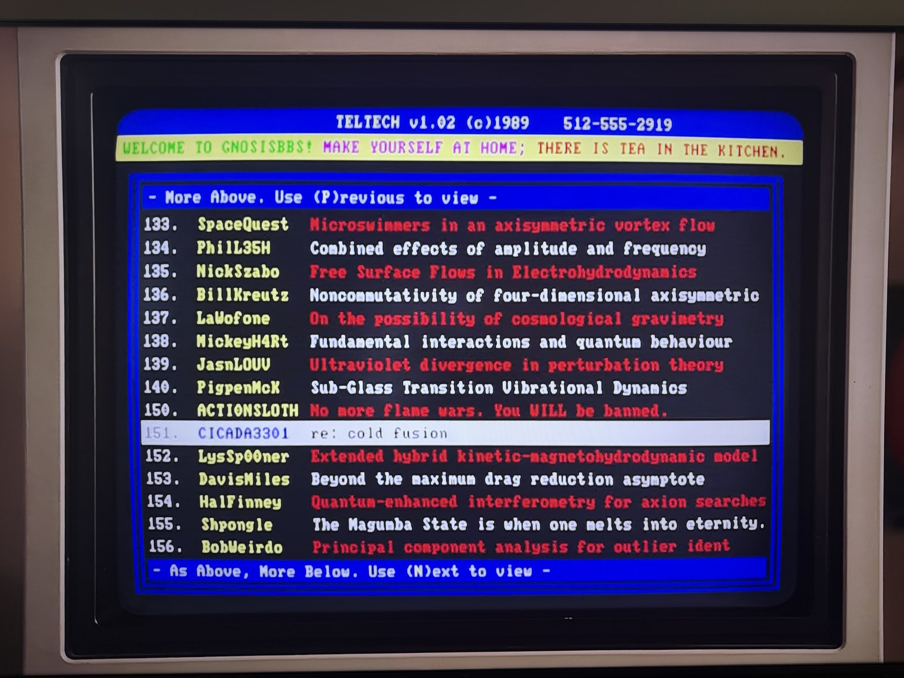

Project B59 · B59-904.022 · popular-culture evidence
Young Sheldon BBS Screen — “SpaceQuest” and “HalFinney”
A television screenshot shared by @CobaltLECobaye shows a fictional BBS screen in an episode of Young Sheldon. The visible user list includes the handles “SpaceQuest” and “HalFinney” on the same screen.


Evidence boundary. This is a later fictional television prop. It documents a pop-culture juxtaposition of the names “SpaceQuest” and “HalFinney”; it does not establish a historical relationship between Hal Finney, Sierra On-Line, or Space Quest.
Discovery credit
Project B59 credits @CobaltLECobaye for surfacing the screenshot. Source trail: post 1911962339596705896 and post 1975549747881779527. A related repost/thread by @Pr_Atomic_59 is retained as part of the research trail.
Provenance
The screenshot was supplied to Project B59 on October 9, 2026. The episode number, production context, and whether the names were intentionally paired have not yet been independently verified.